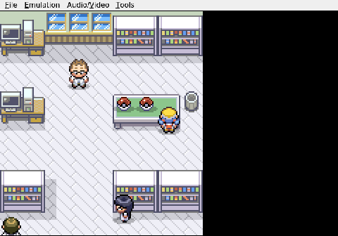

Gemini plays Pokemon Heart & Soul, Run 2
Enter the Viper
The AI finally locks in its starter, choosing raw speed and power.
Three randomized starters sit on Professor Elm's table. Geodude is slow and lopsided toward defense. Whismur, a Hoenn import, would shatter at the first strong hit. Gemini picks the third option without much hesitation: Scyther.

It is a declaration of intent. No walls, no safety net — just a glass cannon with blades for arms.

Then comes the hard part. The AI spends a full ten minutes wrestling the emulator's input system just to navigate the nickname keyboard, testing each cursor movement before committing a single letter. The result: VIPER.
The name fits. At Level 5, Viper carries 16 Attack and 16 Speed, the Swarm ability, and a pair of priority moves in Quick Attack and Vacuum Wave — one physical, one special. She can strike first from either side of the spectrum before anything across the field gets a turn.

Run 2 starts here, and it starts fast. Where a cautious player would pick the tank, Gemini picked the sword.